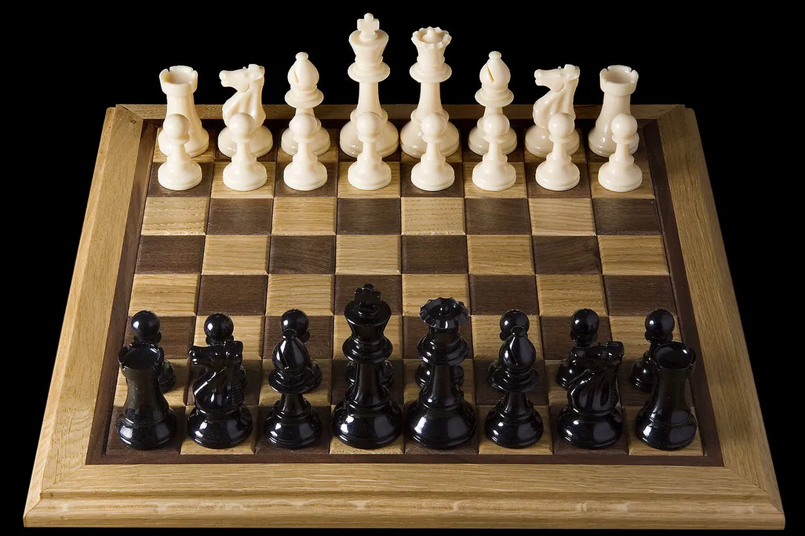
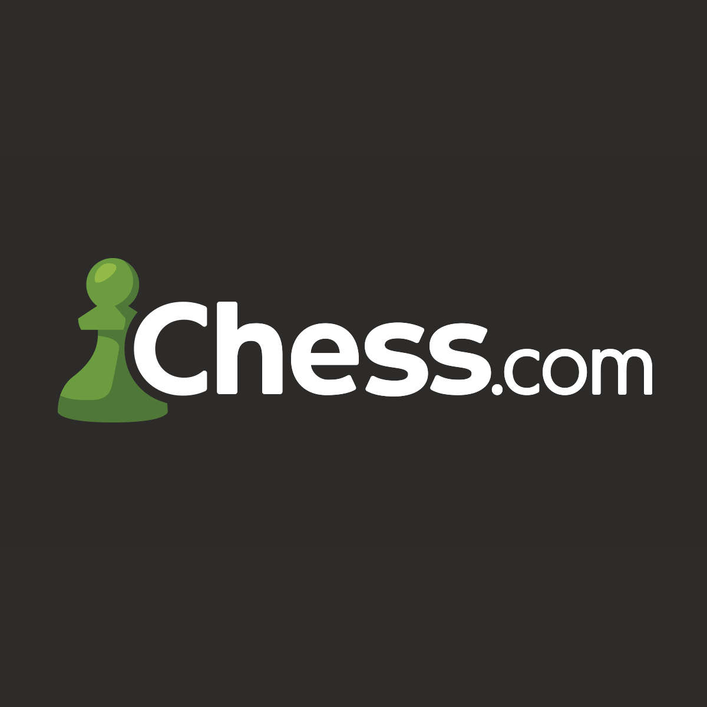

Chess is the world's most popular and recognized games, and originated around 1500 years ago in India. It quickly become popular, and spread throughout the ancient world. As time went on, the rules changed and the game evolved. The modern chess that we all play today originates from Europe, and is slightly different from the original chess in India. This website will teach you how to play the modern chess we all know of today, as well as hints, tips, and tricks to make you a good player.
Chess is usually played physically with a board and physical pieces, however you don't exactly need a physical set of chess to play chess. We have the internet today, which of course, contains online chess. Many websites host chess avaliable for you to play online against other real people or bots, allowing you to practice and hone your skills.
The best and most popular chess website is: chess.com
Chess.com is great for practicing against bots or playing against people in real time, as it has a huge playerbase, clean ui interface, game analysis, and even other gamemodes. However there are also many great alternatives.
But in reality, any chess app on your phone or simple website works, because the game is played the same way, with the same rules.
Chess is a great casual game that requires some thinking and stratagy, but competitive chess is on a completley different level!
Here is a ranking of some of the best chess players!
| Ranking | Full Name | Country |
|---|---|---|
| 1 | Magnus Carlson | USA |
| 2 | Hikaru Nakamura | USA |
| 3 | Fabiano Caruana | USA |
| 4 | Vincent Keymer | Germany |
| 5 | Nodirbek Abdusattorov | Uzbekistan |
| 6 | Alireza Firouzja | France |
| 7 | Wei Yi | China |
| 8 | Anish Giri | Netherlands |
| 9 | Gukesh Dommaraju | India |
| 10 | Wesley So | USA |
These top 10 players are the best of the best. They are masters of chess, also known as grandmasters.
However, they are nothing compared to the actual best player of chess...
Now that you have learned more about the background of chess, you can start learning how to play!
Click here to go to learn how to play chess!